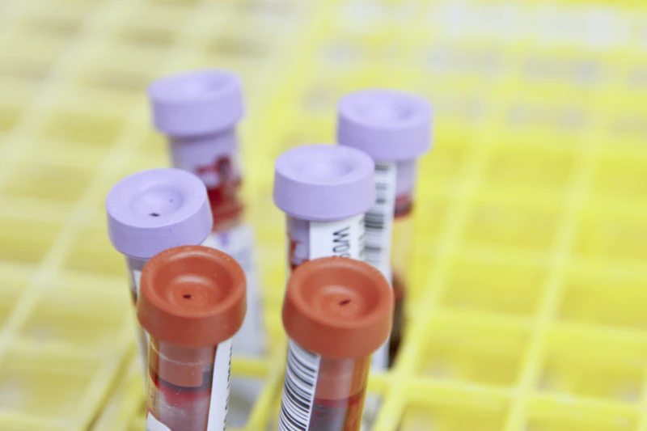

Your Health. Our Priority. Results You Can Trust.
Advanced diagnostic testing, reliable laboratory services, and convenient healthcare support — all designed around you.
Apex Diagnostic Telemetry
Real-Time Specimen TrackingAdvanced Testing Facilities
Equipped with robotic chemistry analyzers and molecular thermocyclers for high-precision diagnostic throughput.
Experienced Laboratory Professionals
Supervised by dedicated pathologists, biochemists, and certified medical laboratory technologists.
Quality-Focused Testing Processes
Stringent multi-tier calibration protocols, blind quality control runs, and systematic clinical oversight.
Convenient Patient Services
Seamless online booking, gentle specimen phlebotomy, and instant digital report retrieval via patient portal.
Our Diagnostic Services
Comprehensive medical disciplines delivering clinically actionable findings for proactive and curative healthcare.

Blood Tests
Complete cellular analysis, hemoglobin variants, coagulation parameters, and blood group profiling.
Learn More
Clinical Pathology
Microscopic analysis of fluids, cytology smears, and biopsy specimens for cellular abnormalities.
Learn More
Biochemistry
Quantitative analysis of blood glucose, kidney metabolites, hepatic enzymes, and electrolyte balances.
Learn More
Microbiology
Culture, identification, and antibiotic sensitivity profiling for bacterial and fungal pathogens.
Learn More
Hormone Testing
High-sensitivity immunoassay profiling of thyroid, reproductive, adrenal, and pituitary hormones.
Learn MoreAllergy Testing
Comprehensive IgE antibody panels mapping food antigens, inhalants, contact allergens, and insect venom.
Learn More
Molecular Diagnostics
Real-time RT-PCR and DNA hybridization panels identifying viral pathogens and genetic predispositions.
Learn More
Preventive Health Screening
Holistic multi-system wellness evaluations for early risk stratification and chronic disease interception.
Learn MoreHealth Checkup Packages
Bundled diagnostic profiles tailored to your lifestyle stage. Note: Packages provide diagnostic screening and do not substitute direct physician advice.
Basic Health Checkup
Ideal for regular annual baseline checkups covering basic hematology, fasting sugar, and lipid health.
Complete Health Checkup
Our most thorough multisystem screening combining hematology, renal, hepatic, and metabolic profiles.
Diabetes Screening Package
In-depth glycemic control assessment with microalbuminuria monitoring and lipid risk evaluation.
Heart Health Screening
Targeted biomarkers designed to assess arterial inflammation, cholesterol fractions, and cardiac stress.
Women's Health Package
Designed around female biological markers including ferritin, thyroid status, bone minerals, and hormones.
Senior Health Screening
Specialized for adults 60+ to evaluate bone density markers, arthritis indicators, and kidney clearance.
How It Works
Experience a friction-free diagnostic process engineered for accuracy and your comfort.
Choose Your Test
Browse through over 120 clinical tests and curated health checkup packages with clear preparation instructions.
Book Your Appointment
Select your preferred morning or afternoon time slot online with instant demo appointment confirmation.
Visit the Laboratory
Experience fast, gentle sample collection by certified phlebotomists in a hygienic, tranquil clinical environment.
Access Your Report
Receive digital notifications and download your validated laboratory reports via the secure patient dashboard.
Why Choose Our Laboratory?
Built upon clinical discipline, advanced analytical instruments, and dedicated patient care.
Quality-Controlled Processes
Daily multi-level internal quality control runs and automated barcode tracking to ensure sample traceability.
Modern Laboratory Equipment
High-throughput analyzers from world-leading medical instrumentation manufacturers with continuous telemetry.
Trained Professionals
Certified pathologists, laboratory scientists, and phlebotomists maintaining strict clinical protocols.
Convenient Appointment Booking
Effortless scheduling with flexible morning fasting slots, minimal waiting times, and digital reminders.
Organized Report Access
Centralized digital repository in your patient portal allowing historical test tracking and easy PDF viewing.
Patient-Focused Support
Compassionate care team ready to assist with pre-test preparation guidelines and administrative inquiries.
Our Modern Facilities
A glimpse into our clinical laboratories, sterile collection spaces, and patient hospitality lounges.

Patient Experience
Read how our streamlined clinical testing and digital reports benefit patients across the community. (Simulated Demo Testimonials)
“The online booking was straightforward, and the phlebotomist was remarkably gentle during the blood draw. My CBC report was ready in the dashboard the very same evening.”
“As someone managing type 2 diabetes, having regular HbA1c and lipid tests tracked digitally in one clean portal makes my quarterly endocrinology follow-ups so much easier.”
“Clean, serene facilities and zero waiting time when you book ahead. The staff handled my elderly mother with genuine empathy and professional dignity.”
Frequently Asked Questions
Quick answers to common questions regarding specimen preparation, appointment scheduling, and digital reports.
You can book any test online by clicking the "Book a Test" button on any page or visiting our Diagnostic Tests directory. Select your test, choose a convenient date and time slot, and submit the booking form. A demo reference code will be generated immediately.
Fasting requirements depend on the specific test. For instance, Fasting Blood Sugar and Lipid Profiles require 8–12 hours of overnight fasting (water is allowed and encouraged). Tests like CBC, HbA1c, or Vitamin D generally do not require fasting. Check the specific test card preparation notes before attending.
Once your simulated report is processed, you can log in to your Client Dashboard to view and inspect demo results, check reference ranges, and review pathologist signatures.
Sign in to your Client Dashboard, navigate to "My Appointments", find your booking, and select "Reschedule". You can choose an alternative upcoming date and slot with instant confirmation.
Please bring a valid photo identification card, your booking reference code (e.g. APX-XXXX), and any doctor's prescription or requisition slip if your physician ordered specific laboratory tests.
You can reach our help desk via our Contact Page, call our line at +91 9876543210, or email us at info@stackly.com. Our support operates Monday through Saturday.
All demo reports feature standard clinical parameters, analyte reference ranges, specimen IDs, and review statuses, and are explicitly watermarked "DEMO — NOT FOR CLINICAL USE" to emphasize that this is a simulated interface.
Detailed preparation guidelines are outlined on each individual test card within the Diagnostic Tests Page and on our comprehensive Services Page.